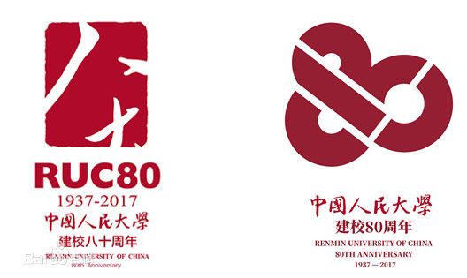
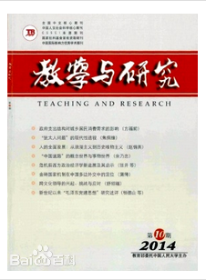
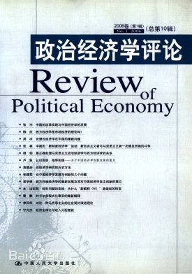
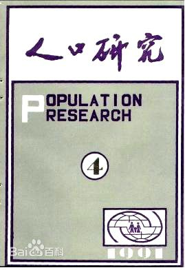
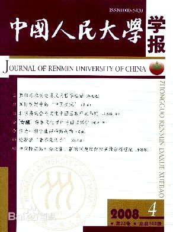
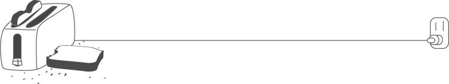
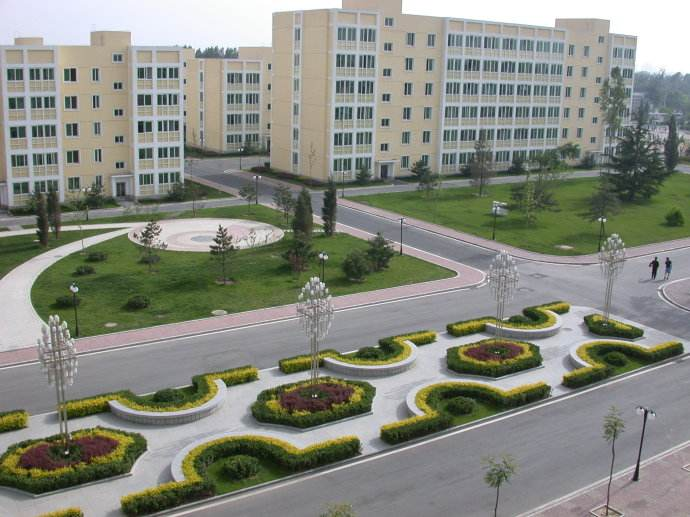
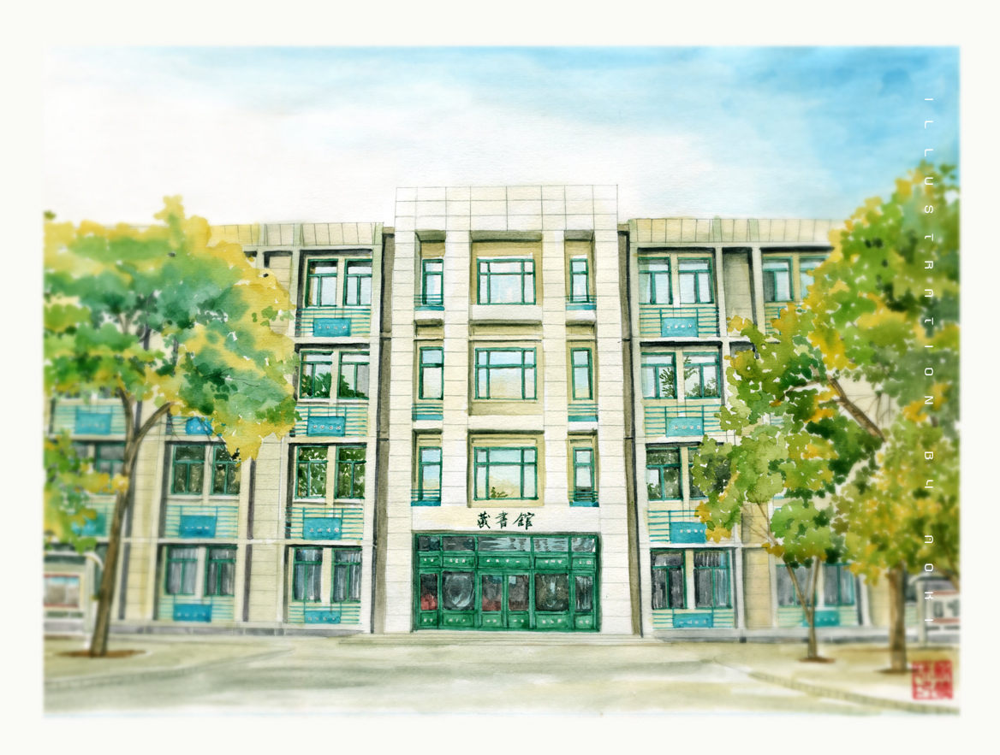
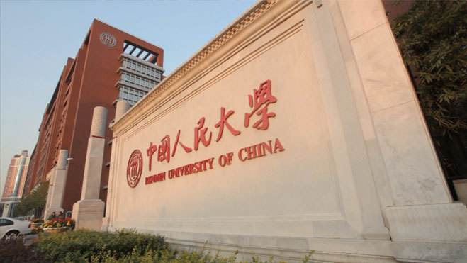

历史沿革 |
院系分类 |
学术研究 |
人才培养 |

1937年”七七”事变以后，为培育革命干部，满足抗日民族解放战争的需要，中共中央于1937年7月底决定创办陕北公学。
1939年夏，抗日战争的形势发生了变化，日寇、国民党顽固派加紧进攻解放区。6月，中共中央决定陕北公学、延安鲁迅艺术学院、延安工人学校、安吴堡战时青年训练班四校联合成立华北联合大学，开赴华北敌人后方办学。
1948年春，中共中央决定将华北联合大学和北方大学合并，成立华北大学，以便集中力量扩大办学规模，为迎接全国解放培养大批建设干部。
1948年8月24日，华北大学成立，校址设在河北省正定县城。
1949年4月，华北大学迁入北平。
1949年10月1日，中华人民共和国成立。为了培养具有马克思主义列宁主义素养和专业知识的新中国的建设人才，中共中央决定以华北大学为基础，调来华北人民革命大学部分干部组建中国人民大学。
据2017年5月学校官网信息显示，中国人民大学的学术期刊共有：
学术期刊 |
复印报刊资料系列刊 |
摘卡系列刊 |
刊资料索引系列刊 |
|
种类 |
16 | 15 | 14 | 7 |
例如：政治经济学评论、教学与研究、人口研究、中国人民大学学报等。

中国人民大学Q版校徽：
单击此处（人大校徽）浏览中国人民大学校徽的寓意。
其实吧，真正的校徽长这样：

正如人们定义的大学的样子，中国人民大学除了浓厚的学术氛围外，也有着美丽的土地、建筑及风景。
操场一景

俯瞰建筑

藏书馆大门

是不是还看不够，看不够这里还有：

细说人民大学二三事 |
||
|---|---|---|
人民大学精神----实事求是 |
国学的天堂之书香之气 |
毕业生风采 |